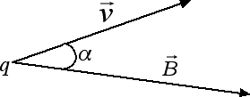

Il campo magnetico
Campi magnetici e forze
Abbiamo visto nelle precedenti sezioni che un filo percorso da corrente genera un campo magnetico e che un campo magnetico esercita una forza su un filo percorso da corrente. Vogliamo ora vedere cosa succede quando abbiamo due fili rettilinei e paralleli percorsi da corrente e posti a una certa distanza d. Il primo filo genera un certo campo magnetico di intensità B1. Questo campo magnetico a sua volta interagisce con il secondo filo generando una forza. Viceversa, il secondo filo genera un secondo campo magnetico di intensità B2 che genera una forza sul filo 1. In definitiva tra i due fili c'è una forza di intensità F = km i1 i2 l / d, dove l è la lunghezza dei fili e d la loro distanza. In particolare, i fili si attraggono se le due correnti circolano nello stesso verso, si respingono invece se i versi delle due correnti sono opposti.
La forza presente tra due fili paralleli percorsi da corrente è importante perché consente di dare una definizione dell'ampere nel Sistema Internazionale. Se abbiamo due fili lunghi 1 m e posti a 1 m di distanza, diremo che la corrente che li attraversa è pari a 1 A se la forza con cui interagiscono i due fili ha un'intensità F = 2 · 10-7 N.
Un altro esempio di forza dovuta ai campi magnetici è la forza di Lorentz. Per avere una forza di Lorentz abbiamo bisogno di due ingredienti fondamentali: una carica in moto q e un campo magnetico B nel quale tale carica è inserita. In questo caso la carica è soggetta a una forza, detta forza di Lorentz, in modulo data da F = q v B sen α, dove α è l'angolo compreso tra il vettore velocità e il vettore campo magnetico.

La forza F si annulla quando la velocità e il campo magnetico sono paralleli (α = 0), mentre è massima F = q v B quando la velocità e il campo magnetico sono perpendicolari. In tutti i casi la forza di Lorentz risulta perpendicolare al piano individuato dalla velocità e dal campo magnetico. Essendo una forza perpendicolare alla velocità l'accelerazione prodotta dalla forza di Lorentz è un'accelerazione centripeta. In altre parole, la forza di Lorentz F = q v B non serve ad aumentare la velocità della carica q ma solo a deviarla facendole percorrere una traiettoria circolare uniforme di raggio r.
Uguagliando forza di Lorentz e forza centripeta q v B = m v2 / r possiamo ricavarci la massa m della particella carica m = q r B / v. Usando la forza di Lorentz possiamo costruire degli spettrometri di massa in grado di misurare la massa delle particelle. Possiamo anche ricavarci il raggio della circonferenza percorsa: r = m v / (q B). Ovviamente tanto maggiore è la massa della particella tanto minore sarà la sua deflessione e dunque tanto maggiore sarà il raggio della circonferenza percorsa. In generale isotopi diversi hanno masse diverse e di conseguenza percorreranno traiettorie diverse se inseriti in un campo magnetico.
La forza con la quale interagiscono i due fili è μN.